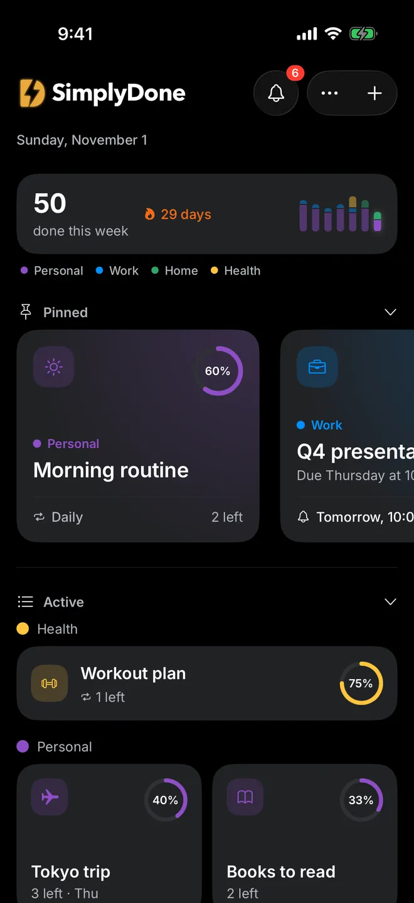
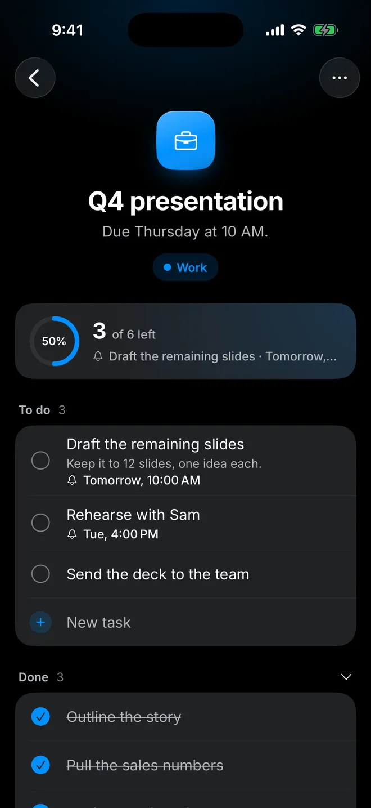
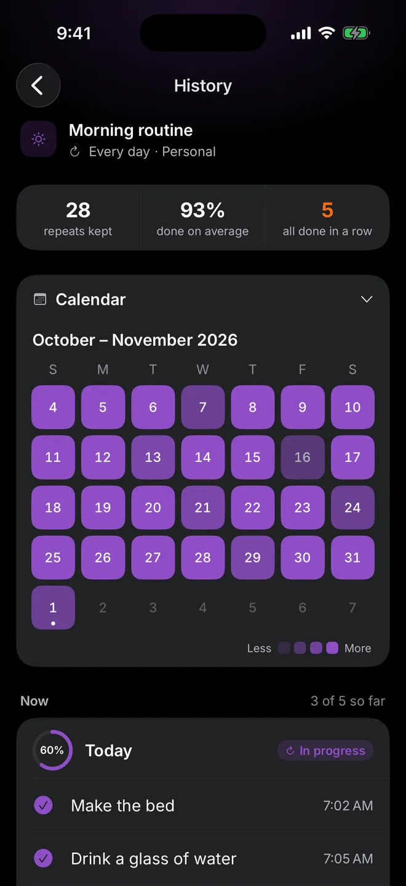
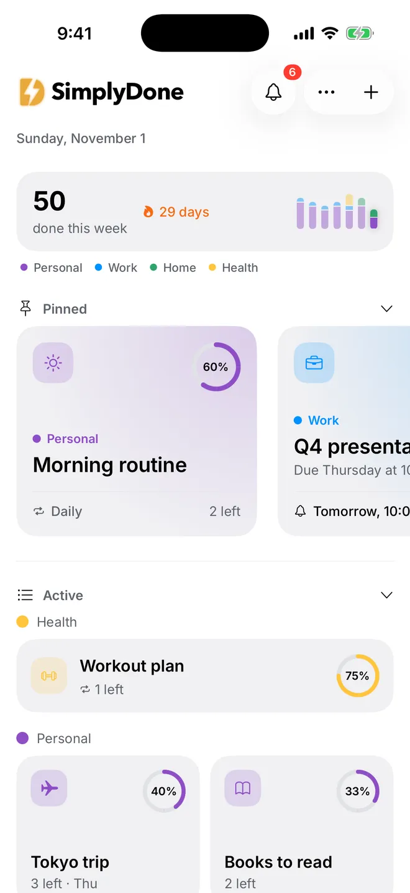
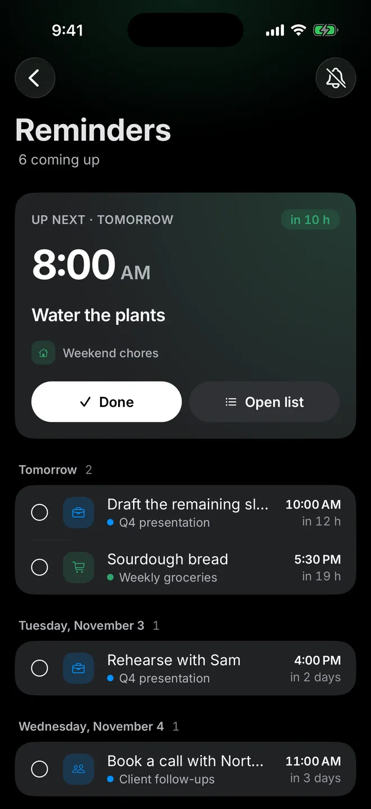
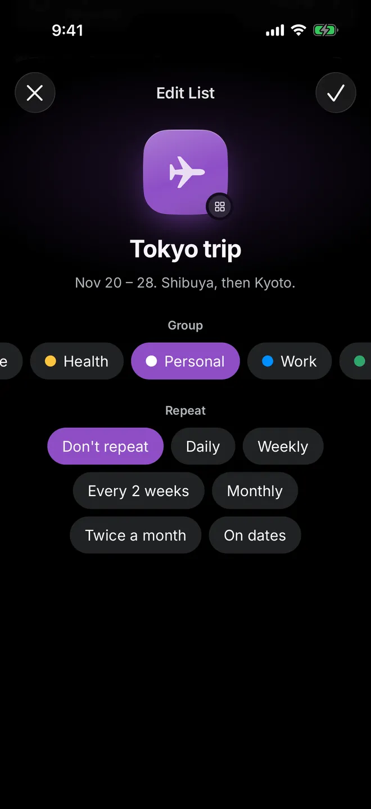
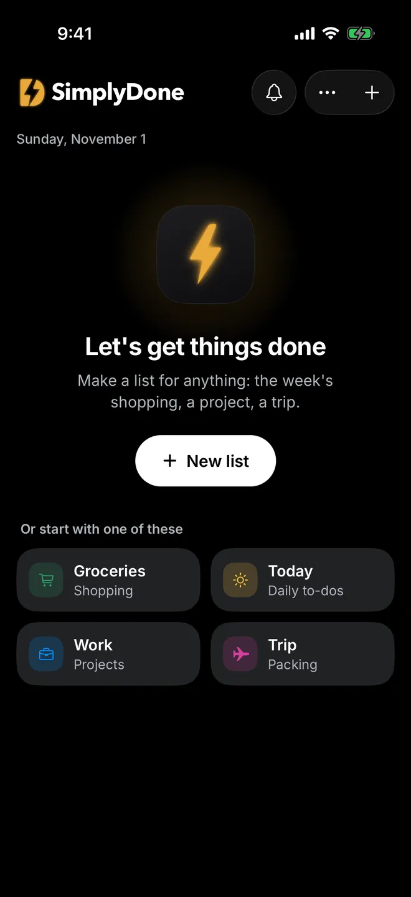

SimplyDone - ToDo & Tasks
Lists, tasks, reminders and routines, kept simple.








Kept simple
Your lists stay yours
Your lists, tasks and photos are saved only on your device. No account to create, and nothing you write is shared with advertisers.
Redesigned in 2.0
Your lists as tiles in their group's color, each with its own icon from a set of 40. What's left and what's next, right at the top of every list.
Repeating lists
Repeat a list every day, every week, every 2 weeks, monthly, twice a month or on dates you pick. Done tasks start fresh, and History keeps every day, your average and your best run.
Reminders
Set a reminder on any task. See what's up next, with anything overdue on top, and check a task off right from its notification.
Progress and streak
See how many tasks you finished this week, split by group, and how many days in a row you've kept it up.
Share with AirDrop
Send a list to another iPhone or iPad. It opens right in SimplyDone.
Photos and descriptions
Add a description or a photo to any task, so the details are right where you need them.
Groups, pins and filters
Color-code lists into groups, pin the ones you use most, and filter to see just what matters.
Light and dark
Dark by default, or switch to light from the ⋯ menu on the main screen.
7 languages
English, Spanish, Japanese, Korean, Thai, Vietnamese and Simplified Chinese.
Free, with an option to remove ads
Free
Everything: unlimited lists and tasks, repeating lists, progress and streak, reminders, photos, groups and sharing. A small banner ad keeps it free.
SimplyDone Pro
Removes the ads and supports the developer. Buy it once and keep it for good. No subscription.